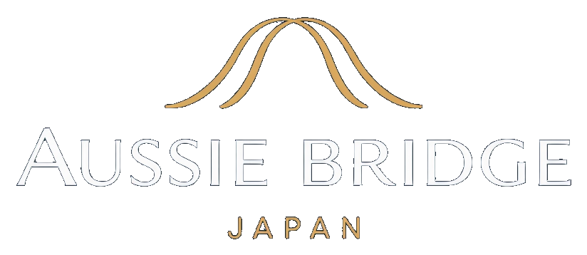

Aussie Bridge Japanは、オーストラリアの飲料・食品ブランドを日本でご紹介します。拠点は名古屋です。まず名古屋の飲食店や小売店に、商品をご紹介します。
Beverages
Food
Other
Aussie Bridge Japanは、オーストラリアのブランドを日本の飲食店や小売店にご紹介します。現在は名古屋を中心に活動しています。商品について、お気軽にお問い合わせください。
仕入れをご検討の際は、サンプルについてご相談ください。サンプルを用意できるかどうかは、商品によって異なります。
業務用の仕入れをご検討の方は、ご希望の商品と数量をお知らせください。私たちが条件を確認して、ご連絡します。
製品情報、価格、配送、輸入パートナーシップについては、お気軽にお問い合わせください。